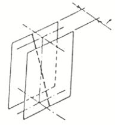
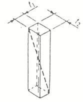
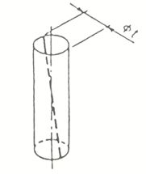
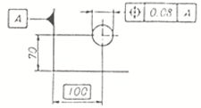
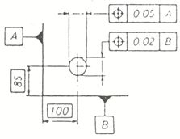
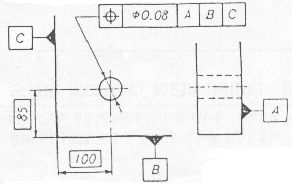
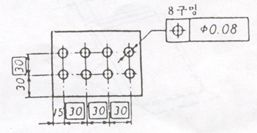

위 치 도
|
 ▷ 공차역의 지정이 서로 직각인 두 방향으로 표시되어 있는 경우의 선의 위치도의 공차역은, 선위치를 축선으로 하는 단면 t1 ×t2인 직6면체 안의 영역이다.  ▷ 공차를 나타내는 수치앞에 기호 ø가 붙어있는 경우의 선의 위치도의 공차역은 선위치를 축선으로 하는 지름 t의 원통안의 영역이다.  |
▷ 지시선의 화살표로 나타낸 축선은, 데이텀 평면A로부터 100㎜만큼 떨어진 선위치에 있어서 지시선의 화살표로 나타낸 방향에 대칭으로 0.08㎜의 간격을 갖는 평행한 두개의 평면 사이에 있어야 한다.  ▷ 지시선의 화살표로 나타낸 축선은 데이텀 평면 A로부터 100㎜, 데이텀 평면 B로부터 85㎜ 떨어진 선위치에 있어서 지시선의 화살표로 나타낸 방향에 대칭으로 0.05㎜, 및 0.02㎜의 간격을 갖는 두 쌍의 평행한 두 개의 평면으로 둘러싸인 직6면체안에 있어야 한다.  ▷지시선의 화살표로 나타낸 축선은 데이텀 평면 A위에 있어서, 데이텀 평면 B로부터85㎜, 데이텀 평면 C로부터 100㎜의 선위치를 지나고 데이텀 평면 A에 수직한 직선을 축선으로 하는 지름 0.08㎜인 원통안에 있어야 한다.  ▷ 지시선의 화살표로 나타낸 8개의 구멍의 축선 상호간의 관계위치는 서로 30㎜ 떨어진 선위치를 축선으로 하는 지름 0.08㎜인 원통안에 있어야 한다.  |
<비고>
Basic ( 예. )으로 거리를 표시할 경우 반드시 위치도 공차가 적용되어야 함.